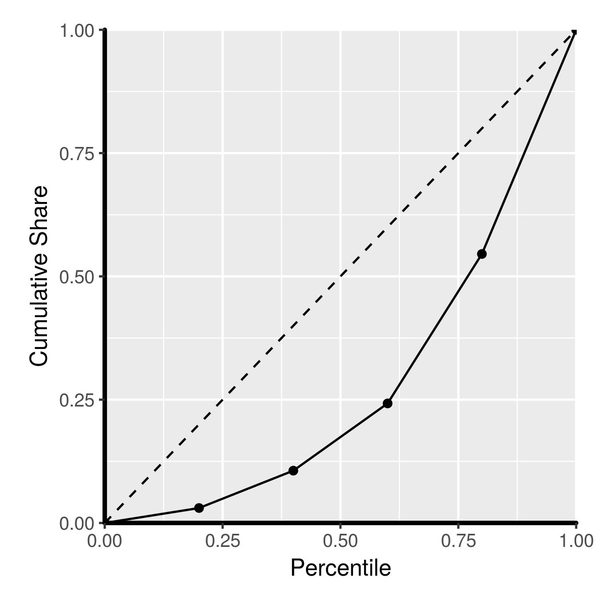
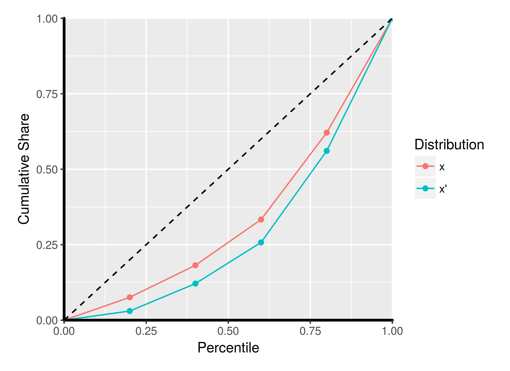
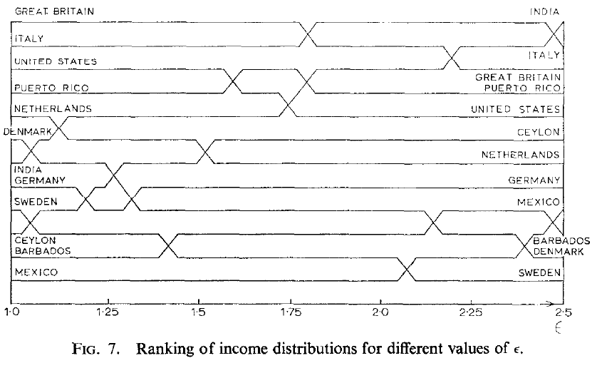

# Normative Theory
## ECON 499: Economics of Inequality
## Winter 2018
### Readings (on Canvas):
- Atkinson section 3.4
- Sen (1979) *(recommended)*
### Normative theory
- We have seen various ways to measure inequality and different properties of measures
- Indices can disagree with one another!
- Can we project our personal (or societal) values onto different distributions?
- When can we say that one distribution is *better* or *worse* than another?
### Positive vs normative
- Much of economics can be broken down into *normative* vs *positive* analysis
- Positive claims can be verified, normative claims reflect values
- Positive claim: The Gini index for the US in 2016 was 45.0
- Normative claim: The Gini index for the US should be lower
### Normative theory
- Start with a set of values, then see what the implications of those values are
- Alternatively: Start with result, then see what kind of values we would need to have to make that result hold
### A (very) brief overview of utility thoery
- Economists tend to think about value in terms of *utility*
- Utility is (roughly) our well-being, satisfaction, or happiness
- Long history in philosophy, but very specific meaning in economics
### Economic agents
- We assume people derive satisfaction from their ability to consume goods and services
- The more goods and services people are able to choose from, the better off they are
- Utility is the satisfaction that people get from the ability to choose
- Express utility as a number that allows us to rank different alternatives (higher utility means more satisfaction)
### Utility and income
- All else equal, more income allows us to buy more things
- Our utility increases as income increases
- **Diminishing marginal utility**: Our enjoyment of additional income gets lower as our income gets higher
- I'd be extremely happy if someone gave me \$100 --- Mark Zuckerberg probably wouldn't care very much
### Social welfare
- Utility only measures well being from your own income
- People care about the income of other people
- We can capture this with a *social welfare function*
- A SWF is like a utility function for society as a whole
- Rather than think of the utility derived from one income, we think of the total utility that is gained from everyone at all points in the distribution
||
|:-:|
|$W(x) = u(x_1) + u(x_2) + ... + u(x_N)$|
- This allows us to weight the utilities of every person --- perhaps we care about the improving the well being of a very poor person more than Bill Gates, for instance
### Problem:
- People have different utility functions. How do we decide which utility function to use?
- Sen (1971): Consider a person who experiences a physical disability. They will derive less utility from a given level of income, since they have fewer opportunities to spend that money
- Compare that person to a "pleasure-wizard" who derives large satisfaction from small increases in income
### Rawlsian SWF interpretation
- John Rawls (1971): Think about distributions from behind a "veil of ignorance"
- Before you are born, you get to choose which society you live in
- You have an equal chance of being born anywhere within that society
- Societies with high inequality mean that there is a higher risk of being poor
- The SWF is therefore just a measure of *risk-aversion* --- how much of a gamble are you willing to take?
### Example:
$$ x = (5,7,10,19,25) $$
$$ x' = (2,5,9,20,30) $$
### Cumulative income shares
|| Obie | Michael | Llewelyn | Rudy | Kitty |
|---:|:---:|:---:|:---:|:---:|:---:|
|$~$ $~$ $~$ $~$ $~$ $~$ $~$ $~$ $~$ $x:$|2|5|9|20|30|
|$~$|
|$~$|
|$~$|
### Cumulative income shares
|| Obie | Michael | Llewelyn | Rudy | Kitty |
|---:|:---:|:---:|:---:|:---:|:---:|
|$~$ $~$ $~$ $~$ $~$ $~$ $~$ $~$ $~$ $x:$|2|5|9|20|30|
|Cumulative income:|2|7|16|36|66|
|$~$|
|$~$|
### Cumulative income shares
|| Obie | Michael | Llewelyn | Rudy | Kitty |
|---:|:---:|:---:|:---:|:---:|:---:|
|$~$ $~$ $~$ $~$ $~$ $~$ $~$ $~$ $~$ $x:$|2|5|9|20|30|
|Cumulative income:|2|7|16|36|66|
|Cumulative share:|0.03|0.11|0.24|0.54|1|
|$~$|
### Cumulative income shares
|| Obie | Michael | Llewelyn | Rudy | Kitty |
|---:|:---:|:---:|:---:|:---:|:---:|
|$~$ $~$ $~$ $~$ $~$ $~$ $~$ $~$ $~$ $x:$|2|5|9|20|30|
|Cumulative income:|2|7|16|36|66|
|Cumulative share:|0.03|0.11|0.24|0.54|1|
|Percentile:|20|40|60|80|100|
Lorenz curve
$$x=(2,5,9,20,30)$$

Lorenz curve
$$x=(5,7,10,19,25)$$
$$x' = (2,5,9,20,30)$$

$$ \text{Gini}=A/(A+B) $$
### Lorenz domination
- A distribution $x$ is said to *Lorenz dominate* distribution $x'$ if the Lorenz curve for $x$ is above $x'$
Example:
$$x=(5,7,10,19,25)$$
$$x' = (2,5,9,20,30)$$
$$x~ \text{Lorenz dominates} ~ x'$$
### Atkinson theorem
Suppose $x$ and $x'$ are two distributions with the same mean. A person with diminishing marginal utility of income will always prefer a society with distribution $x$ if $x$ Lorenz dominates $x'$.
- A SWF that weights the incomes of poorer people more heavily than richer people will be greater under $x$
### Example
#### Distribution A
|| Obie | Michael | Llewelyn | Rudy | Kitty |
|---:|:---:|:---:|:---:|:---:|:---:|
|$x:$|2|5|9|20|30|
|Cumulative income:|2|7|16|36|66|
|Cumulative share:|0.03|0.11|0.24|0.54|1|
|$~$|
---
#### Distribution B
|| Obie | Michael | Llewelyn | Rudy | Kitty |
|---:|:---:|:---:|:---:|:---:|:---:|
|$x':$|20|50|90|200|300|
|Cumulative income:|20|70|160|360|660|
|Cumulative share:|0.03|0.11|0.24|0.54|1|
|$~$|
### Generalized Lorenz curves
- The Atkinson theorem doesn't hold if the mean is not the same
- What happens if average income doubles, but inequality is slightly worse?
- We can instead use *generalized Lorenz curves*, which are formed by multiplying the cumulative share by the mean
### Generalized Lorenz example
#### Distribution A (mean = 13.2)
|| Obie | Michael | Llewelyn | Rudy | Kitty |
|---:|:---:|:---:|:---:|:---:|:---:|
|$x:$|2|5|9|20|30|
|Cumulative income:|2|7|16|36|66|
|Cumulative share:|0.03|0.11|0.24|0.54|1|
|Cum. share $\times$ mean:|0.4|1.4|3.2|7.2|13.2|
---
#### Distribution B (mean = 132)
|| Obie | Michael | Llewelyn | Rudy | Kitty |
|---:|:---:|:---:|:---:|:---:|:---:|
|$x':$|20|50|90|200|300|
|Cumulative income:|20|70|160|360|660|
|Cumulative share:|0.03|0.11|0.24|0.54|1|
|Cum. share $\times$ mean:|4|14|32|72|132|
Generalized Lorenz curves
$$x=(2,5,9,20,30)$$
$$x' = (20,50,90,200,300)$$
 ### Shorrocks Theorem
Suppose $x$ and $x'$ are two distributions. A person with diminishing marginal utility of income will always prefer a society with distribution $x$ if the generalized Lorenz curve for $x$ dominates that of $x'$
- The same kind of SWF as in the Atkinson theorem
### Inequality aversion
- Diminishing marginal utility of income means that people are "inequality averse"
- Now assume that the degree to which people are averse to inequality is constant
- Changes in mean income do not affect your attitudes toward inequality
### Inequality aversion
The leaky bucket:
- Imagine we are going to transfer \$100 from a rich person to a poor person
- We put the money (coins) in a bucket to bring to the poor person
- The bucket has a hole, and the money slowly falls out in transit
- How much money are we prepared to lose before we decide not to go through with the transfer?
### Leaky bucket
#### Distribution A
|| Obie | Michael | Llewelyn | Rudy | Kitty |
|---:|:---:|:---:|:---:|:---:|:---:|
|$x:$|2|5|9|20|30|
||
#### Take 10 from Kitty to give to Obie, but we lose $\delta\times 10$ along the way:
---
#### Distribution B
|| Obie | Michael | Llewelyn | Rudy | Kitty |
|---:|:---:|:---:|:---:|:---:|:---:|
|$x':$|**$2+(10-\delta\times 10)$**|5|9|20|**$30-10$**|
### Leaky bucket
- $\delta = 0$: Obie gets all of the transfer
- $\delta = 1$: Obie gets none of the transfer
- What is the highest value of $\delta$ that we are willing to have?
- $\delta$ is our measure of *inequality aversion* for our SWF
### Shorrocks Theorem
Suppose $x$ and $x'$ are two distributions. A person with diminishing marginal utility of income will always prefer a society with distribution $x$ if the generalized Lorenz curve for $x$ dominates that of $x'$
- The same kind of SWF as in the Atkinson theorem
### Inequality aversion
- Diminishing marginal utility of income means that people are "inequality averse"
- Now assume that the degree to which people are averse to inequality is constant
- Changes in mean income do not affect your attitudes toward inequality
### Inequality aversion
The leaky bucket:
- Imagine we are going to transfer \$100 from a rich person to a poor person
- We put the money (coins) in a bucket to bring to the poor person
- The bucket has a hole, and the money slowly falls out in transit
- How much money are we prepared to lose before we decide not to go through with the transfer?
### Leaky bucket
#### Distribution A
|| Obie | Michael | Llewelyn | Rudy | Kitty |
|---:|:---:|:---:|:---:|:---:|:---:|
|$x:$|2|5|9|20|30|
||
#### Take 10 from Kitty to give to Obie, but we lose $\delta\times 10$ along the way:
---
#### Distribution B
|| Obie | Michael | Llewelyn | Rudy | Kitty |
|---:|:---:|:---:|:---:|:---:|:---:|
|$x':$|**$2+(10-\delta\times 10)$**|5|9|20|**$30-10$**|
### Leaky bucket
- $\delta = 0$: Obie gets all of the transfer
- $\delta = 1$: Obie gets none of the transfer
- What is the highest value of $\delta$ that we are willing to have?
- $\delta$ is our measure of *inequality aversion* for our SWF
Atkinson measure, revisited
$$ I_A(x, \epsilon) = 1 - \left(\dfrac{1}{N}\sum_{i=1}^N\left(\dfrac{x_i}{\mu}\right)^{1-\epsilon}\right)^{\frac{1}{1-\epsilon}} $$
- $\epsilon = \dfrac{1}{2\delta}$
- The Atkinson measure ranks distributions in accordance with a constant inequality aversion SWF
- $\epsilon$ measures how much of a trade-off we are willing to accept between total (or average) income and inequality

Data from 1970! Much different today.